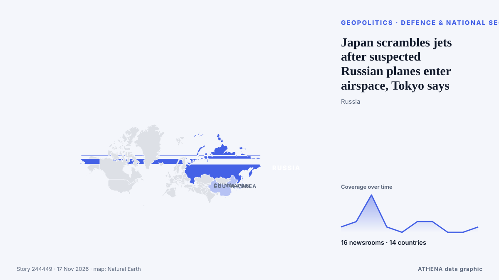

ATHENA Glaux Intelligence — Global news intelligence — every number explained
Every headline, checked across countries.
ATHENA Glaux reads 634 news outlets worldwide. A story becomes a verified event only when independent outlets report it. Each event shows who was first and a risk score with its reasons.
Reports drift in from independent outlets - when two meet on the same story, it becomes a verified event.
How ATHENA checks a story
- CollectReports arrive from independent outlets in many countries.
- MatchWhen two outlets meet on the same story, it becomes a verified event.
- ExplainEach event shows who was first, how far it spread and why the risk is what it is.

GeopoliticsJapan scrambles jets after suspected Russian planes enter airspace, Tokyo says
Tokyo's announcement came hours after South Korea said it had deployed fighter jets and conducted tactical manoeuvres after several Russian military aircraft entered its air defence zone. from Euronews English
Belize strengthens Climate finance and resilience partnerships at COP31
By Zoila Palma: The Government of Belize, in partnership with the Green Climate Fund (GCF), continues to advance key initiatives aimed at strengthening climate resilience and sustainable development. from Breaking Belize News
Russian Missiles Hit 2 Major Kyiv Bridges, Damage Critical Infrastructure
Russian missiles struck Kyiv’s North and South bridges late Monday, Nov. from Kyiv Post

Ships at the world's chokepoints now
Live AIS counts. Tap or hover a bar for the detail.
Downdetector reports outages at major US banks
User reports on Monday indicated problems at JPMorgan Chase, Bank of America, U.S. from The Korea Times
United Airlines says ‘widespread’ system outage resolved
Airline acknowledges ‘technology issue that delayed flight departures’ in latest high-profile outage to affect Americans United Airlines said on Monday that it had resolved a widespread system… from The Guardian
Iran says 2 oil tankers hit mines, catch fire in Strait of Hormuz
IRGC Navy says it mined US-created southern route through strait. from Anadolu Agency (English)
Geopolitics, Politics & Security
More ›Spy Scandal and Midterm Defeat Heat Up Trump’s Asia Visit
With the political constraints imposed by the US midterm elections lifted, Donald Trump may become more erratic and unpredictable. from The Scotsman
- Wars & conflicts
After Yemen setback, Saudi Arabia replaces military commander
- Wars & conflicts
BAHRAIN ISSUES ALERT, URGES PUBLIC TO REMAIN CALM
- Elections & politics
With US midterms underway, courts rebuff Trump's pressure on state election officials
- Wars & conflicts
Iran says drones hit US radar system in Bahrain
Economics, Finance & Markets
More ›Popular websites subverted in bid to steal crypto, target iPhone users
UNITED STATES: Some of the world’s most visited websites, including those belonging to Zoom, HSBC, Equifax, CNN, Salesforce and IKEA, were subverted in an effort to steal cryptocurrency and infect… from New Straits Times
- Banking & credit
Palestinian woman killed, 10 wounded in settler gunfire, official TV says
- Stocks, bonds & markets
Russell Brand could face prison discipline after wife shares his jail message
- Banking & credit
West Bank’s displaced Palestinians hold little hope for post-Netanyahu era
- Banking & credit
Global banks set to enter 2027 on strong footing, Moody's report says
Trade, Industry & Infrastructure
More ›Oil Tanker Transiting Strait Of Hormuz Attacked Near Oman, 4th In 24 Hours
The Iran Navy said the tanker was travelling in a restricted area with its navigation switched off. from NDTV
- Aviation, rail & road
Scope of cooperation between Russia and Vietnam expanding — Kremlin aide
- Tariffs & export controls
China eases tariffs amid warming ties with Canada
- Construction & infrastructure
Anwar: Malaysia seeks French support for Asean Power Grid
- Aviation, rail & road
US airports slowly return to normal after three days of disruption
Energy, Resources & Environment
More ›Malaysia loosens rare earths curbs for France amid upgrade of ties to strategic partnership
The countries will cooperate in areas of defence, trade, energy transition and critical minerals. from The Business Times
- Oil & gas
Japan proposes Asia oil security task force at ASEAN summit
- Climate & climate policy
Absent officially, unofficially ‘America is all in’ at COP31
- Electricity & power
Ghalibaf warns dams near US bases are "dual-use" too
- Oil & gas
Gas leak at ONGC's Konaseema plant in Andhra Pradesh; 800 people evacuated
Technology, AI & Cybersecurity
More ›US to curb China's access to AI chips as Trump heads to Asia
It also requires companies in Singapore, Thailand, Malaysia, Indonesia and Brazil to apply for US export licences. from The Straits Times
- Chips & computing
Singapore, US agree to keep discussing Megaspeed as scrutiny of Nvidia scandal widens
- Chips & computing
SK Hynix to spend $1 billion over five years to support chip suppliers
- Media & disinformation
US judge tosses new visa rules for Nigerians, other foreign students, journalists
- Artificial intelligence
California sues OpenAI over the rogue AI agents that hacked Hugging Face
Business, Companies & Investment
More ›APEC Shenzhen summit puts China's tech giants in the spotlight for global cooperation
The 2026 Asia-Pacific Economic Cooperation (APEC) Business Leaders' Summit opened in Shenzhen, China, on November 17, bringing together more than 2,000 government and business representatives and… from DigiTimes Asia
- Sectors & company risks
Paid without turning up, then came a $165,000 pay day: Bikie Joel Leavitt’s Big Build bounty under microscope
- Mergers & acquisitions
Coca-Cola HBC confirms JSE listing
- Corporate strategy
Meta says it tuned Instagram to curb suggestive, violent content in India
- Corporate strategy
When is Amazon’s Black Friday 2026 sale? Plus the best early deals
Three ways to read today
Start with the one that fits your timeVerified events
Ranked by how widely they are reported
- Nepal’s push for mountain climate action features in COP31 draft decision133 outlets · 60 countriesRisk 3.5
- Israel: Party chiefs say Netanyahu's election fraud claims a coup attempt159 outlets · 56 countriesRisk 4.7
- Nvidia rules out Jensen Huang comeback despite backing from big names103 outlets · 40 countriesRisk 5.2
- Amazon Reveals 007’s Successor: Robert Pattinson is the New James Bond76 outlets · 33 countriesRisk 3.0
- US dollar hits 19-month high on Fed rate hike bets65 outlets · 27 countriesRisk 3.1
Analysis Desk
Ask a question and read a reasoned assessment of a leading story, with what would prove it wrong.
Open the Analysis Desk ›Today in numbers
| 10:00 | 350 |
|---|---|
| 11:00 | 444 |
| 12:00 | 393 |
| 13:00 | 672 |
| 14:00 | 599 |
| 15:00 | 672 |
| 16:00 | 532 |
| 17:00 | 480 |
| 18:00 | 513 |
| 19:00 | 686 |
| 20:00 | 482 |
| 21:00 | 563 |
| 22:00 | 321 |
| 23:00 | 328 |
| 00:00 | 319 |
| 01:00 | 383 |
| 02:00 | 269 |
| 03:00 | 297 |
| 04:00 | 631 |
| 05:00 | 405 |
| 06:00 | 502 |
| 07:00 | 898 |
| 08:00 | 722 |
| 09:00 | 337 |
Risk of today's events
Emerging signals
- Sudden surge · Active nowCyclone Akvan
- Rising risk · Active nowForensic expert says his analysis of autopsy photos suggests Epstein was killed
- Sudden surge · Active nowChase
- Sudden surge · Active nowUnited Airlines
- Sudden surge · Active nowJericho
Stay informed
ATHENA Weekly Risk Picture
The week's biggest geopolitical, economic and shipping risks, cross-checked and scored.
Every Friday at 08:00 Athens time · free · in English
Subscribe freeATHENA on Telegram
News the moment it is published: breaking events at risk 6 or more, an hourly round-up, risk-tracker updates and the daily briefing at 10:00.
Free · posts in English · leave at any time
Join the channelSign-up is handled by beehiiv with double opt-in: nothing you type is sent to ATHENA, and every issue has an unsubscribe link.
Risk trackers
More ›Global risk outlook — week 47, 2026 (16–22 Nov) ›